UDN
Search public documentation:
ProjectorTextures
Interested in the Unreal Engine?
Visit the Unreal Technology site.
Looking for jobs and company info?
Check out the Epic games site.
Questions about support via UDN?
Contact the UDN Staff
Projector Textures
Document Summary: A thorough reference to the Projector settings relevant to the ProjectiveTexture. Document Changelog: Last updated by Jason Lentz (DemiurgeStudios?) for splitting up the Projectors documents into smaller more manageable docs. Original authors were Lode Vandevenne (UdnStaff) and Jason Lentz (DemiurgeStudios?).Introduction
The following settings describe the Projector settings that are relevant to the ProjectiveTexture including properties you will need to set in the properties of the Texture itself. For the rest of the Projector properties, see the MainProjectorProperties doc.ProjTexture
The Projective Textures are projected with Projectors. This is an actor class like any other, where you can set the texture you want it to project, the direction, the FOV, and more. The Projector is in the Actor Class Browser --> Projector. When you add one in your map, the Projector is represented with a projector sprite. To give the projector a texture, open the Texture Browser, and select the texture you want to use, preferably a texture with a transparent background. The texture should be a square texture, for example 256*256, and not a texture with a different height and width, for example 256*128. In the last case, the texture will be resized to make it a square. When you have selected the texture, go to the properties of the Projector, expand Projector and click on ProjTexture. Press the Use button that appears, so the name of the selected texture appears in the text field. Also, set the FOV setting to something higher than 0, because if this setting is 0 the projection will look weird. For example if you set it to 1, it'll be almost parallel.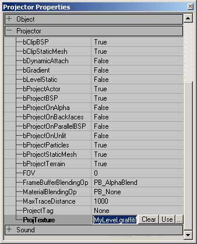
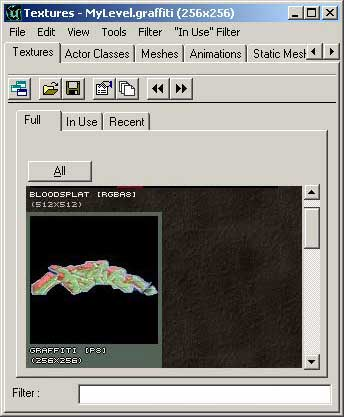
Now that it has a texture, rotate the Projector with the Rotation Tool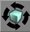
, so the arrow points towards the wall, ground, terrain or whatever you want the texture to be projected at. You should also see a yellow box and a blue frustum when you selected the Projector. The blue frustum represents the rays of the projector, and the section of the surfaces with this box will get the projection (in most cases).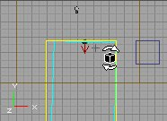
When you rotated it towards a BSP wall that's close enough, you should see something like this: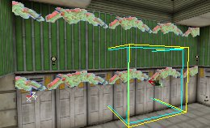
ClampMode
If you project the texture on something, it'll normally be repeating. Only if you set bClipBSP to True, it'll not be repeating on BSP, but on other things, such as large Static Meshes, it still will. To avoid this, you have to set the UClampMode and VClampMode of the used texture to TC_Clamp. These settings are in the Texture Properties --> Texture.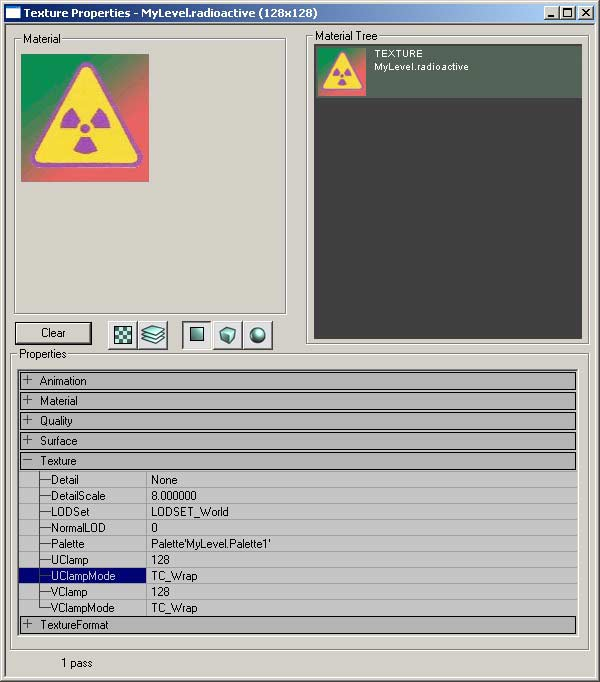
For example, if you leave for this texture UClampMode and VClampMode to TC_Wrap, and you project the texture on this big Static Mesh, it'll be repeating: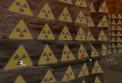
If you set UClampMode to TC_Clamp and VClampMode to TC_Wrap, it'll look like the first screenshot, and it you set UClampMode to TC_Wrap and VClampMode to TC_Clamp, it'll look like the second picture: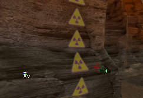
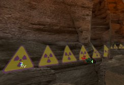
When you set both UClampMode and VClampMode to TC_Clamp, the texture will not be repeating anymore: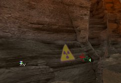
Warning: when you use TC_Clamp, make sure all the pixels at the edge of the texture are 100% transparent: otherwise, these outer pixels are spread over the whole surface. For example, if I set bAlphaTexture to False for the texture, it'll become 100% opaque, and the whole Static Mesh has got the red-greed gradient now. You also have to make sure all the mipmaps have a transparent border, otherwise you may see the texture spread out if you look at it from a distance. If you save it as a *.dds file with the DDS Plug-in (in PSP or PhotoShop), make sure you set the Border Color of the mipmaps to something that will become transparent, this means 127-grey if you want to use the texture modulated, black if it's transparent, or the alpha channel is black at the borders if you want to use it as AlphaTexture.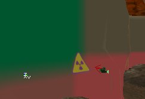
If you want the texture to be repeating, set one or both of the settings to TC_Wrap, and if you project on BSP surfaces, also make sure bClipBSP is False. On BSP, the texture will only be repeated on the walls that touch the blue frustum, for example the wall on the screenshot exists out of 2 BSP surfaces: the upper one with the green texture, and the lower one with the grey texture. The texture will only be repeated on both surfaces if the projector is placed this way, that the blue frustum touches both surfaces: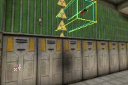
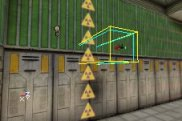
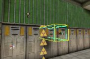
FrameBufferBlendingOp & MaterialBlendingOp
These options two fields determine the blending operation between the material being projected onto and the projected texture. Below each of their effects are described. Nearly each combination of every setting can produce a different effect. Below is a list of what each setting will get you. I have used both a StaticMesh and a ProjTexture with AlphaChannels to illustrate all the nuances. This is the Texture used for the ProjTexture: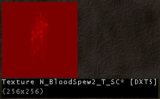
| FrameBufferBlendingOp = None | _ |
|---|---|
| MaterialBlendingOp = None | MaterialBlendingOp = Modulated |
| 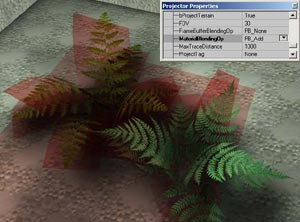 | |
| MaterialBlendingOp = AlphaBlend | MaterialBlendingOp = Add |
| FrameBufferBlendingOp = Modulated | _ |
|---|---|
| 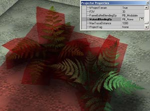 | 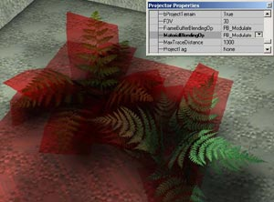 |
| MaterialBlendingOp = None | MaterialBlendingOp = Modulated |
| 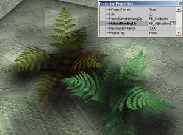 | |
| MaterialBlendingOp = AlphaBlend | MaterialBlendingOp = Add |
| FrameBufferBlendingOp = AlphaBlend | _ |
|---|---|
| 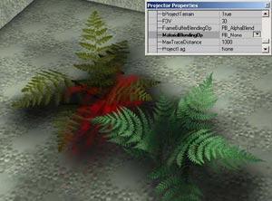 | |
| MaterialBlendingOp = None | MaterialBlendingOp = Modulated |
| 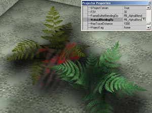 | 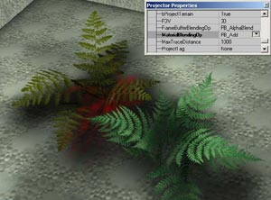 |
| MaterialBlendingOp = AlphaBlend | MaterialBlendingOp = Add |
| FrameBufferBlendingOp = Add | _ |
|---|---|
| 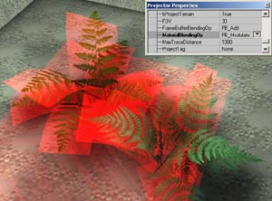 | |
| MaterialBlendingOp = None | MaterialBlendingOp = Modulated |
| 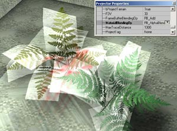 | 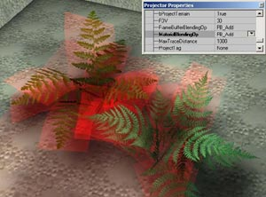 |
| MaterialBlendingOp = AlphaBlend | MaterialBlendingOp = Add |